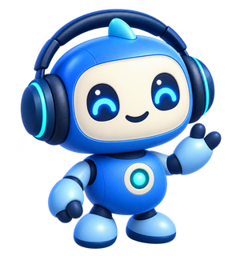
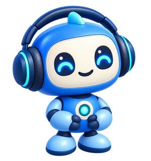
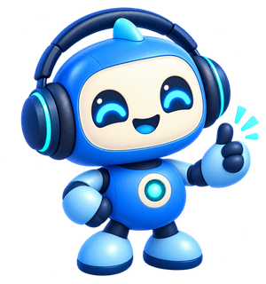

שלב 1 מתוך 3 · נעים להכיר

נעים להכיר, אניבוט הפודקאסטים שלך. מורידים לדרייב, מקבלים התראות או בוחרים רק את הפרקים שמעניינים אותך — דרך המייל.
בוחרים איך לעקוב. פודקי מטפל בשאר בריצות אוטומטיות, בדרך כלל פעם בשעה.
סריקה מתוזמנת של כל הערוצים שנרשמתם אליהם, והורדת פרקים חדשים ישירות לתיקיות מסודרות בדרייב.
בוחרים הרשמה רגילה להורדה אוטומטית, או התראות בלבד במייל השבועי. אפשר לשנות מצב או להסיר ערוץ במייל, וגם לערוך את רשימת הערוצים בדרייב.
מחפשים ערוץ דרך ״הוסף ערוץ״, או פרק דרך ״חפש פרק״. כותבים שם או מילות חיפוש בנושא המייל, ושולחים. תוצאות מאפל פודקאסטים מגיעות עם כפתורי פעולה.
״קבל פרקים״ שולח קטלוג HTML של הפרקים הזמינים בפיד: מחפשים, ממיינים ובוחרים כמה יחד. מורידים JSON, מצרפים למייל ושולחים — גם בלי נושא. הבחירה אינה משנה את המינוי.
פרקים כבדים מתחלקים להורדה על פני כמה ריצות, כדי לעמוד במגבלת הזמן של גוגל סקריפט.
דוח שבועי של הורדות ופרקים חדשים מערוצי התראות, עם ״קבל פרק״ לבחירה ידנית. דוח ארוך מפוצל לחלקים. פודקי גם מתריע על מחסור במקום ושומר תמונה ומידע לצד הפרקים.

הסקריפט פועל בחשבון שלך. חשוב להכיר את שני סוגי המידע שמועברים למנהל השירות:
כתובת המייל שלך — נשלחת לטופס של מנהל השירות בכל הרצה, גם אם מנהלים את רשימת הערוצים ידנית בדרייב.
פקודות וקבצים שנשלחים במייל — הודעות לכתובות הבקרה הייעודיות, כולל נושא, גוף ההודעה וקובצי בחירה מצורפים, גלויים למנהל השירות. אלה כוללים הרשמה והסרה, מעבר להתראות בלבד, חיפוש ודרישת פרקים או קטלוג. הסקריפט מעבד את הפקודות מתוך תיבת ״נשלח״ שלך. עריכה ידנית של רשימת הערוצים אינה שולחת פקודת מייל; דיווח כתובת המייל בכל הרצה ממשיך לחול.

אותו תהליך התקנה, בחשבון Google שלך. ההרצה הראשונה יוצרת את התיקיות ואת התזמון האוטומטי.
מוחקים את כל התוכן שמופיע כברירת מחדל בקובץ Code.gs.
לוחצים על הכפתור, וקוד ההפעלה (files/podcast_v2.gs) נטען ומועתק אוטומטית ללוח ההעתקה. עוברים לחלון של Apps Script (GAS) שנפתח בשלב 1, לוחצים בתוך קובץ Code.gs הריק, ומדביקים (Ctrl+V / ⌘V).
ההעתקה לא זמינה? פתח את קוד ההפעלה והעתק ידנית.
אין צורך להגדיר שום דבר אחר — לא תיקיות ולא טריגרים בנפרד. שומרים את הפרויקט (Ctrl+S / ⌘S), בוחרים את הפונקציה setUp ולוחצים על Run (▶) כדי להריץ אותה פעם אחת. בהרצה הראשונה תיפתח בקשת הרשאות — אלה השלבים לאישור:
בדרך כלל אישור ההרשאות נדרש בהתקנה. Google עשויה לבקש אישור מחדש בהמשך, למשל לאחר שינוי בהרשאות הפרויקט.
פודקי ישלח מייל היכרות עם הוראות ודוגמת TXT. מתחילים ב״הוסף ערוץ״ ובוחרים הורדה אוטומטית או התראות בלבד. לא הגיע מייל? בדקו ספאם וקידומים ואת יומן ההרצות ב-Apps Script.
שלושת כפתורי הערוץ: ״הירשם״ מפעיל הורדה אוטומטית, ״הירשם להתראות בלבד״ מוסיף פרקים חדשים לדוח השבועי, ו״הסר״ מבטל את המינוי. מוצגים שני הכפתורים שמתאימים למצב הנוכחי. ״קבל פרקים״ זמין לקבלת קטלוג בכל מצב.
פרק בודד: ״קבל פרק״ מוסיף פרק לתור ההורדה בלי לשנות את המינוי לערוץ. יש לשלוח את המייל שנפתח כדי לבצע את הפעולה.
כמה פרקים יחד: מורידים את קובץ ה-HTML מהקטלוג ופותחים בדפדפן, לא בתצוגה המקדימה של Gmail. באנדרואיד נדרש דפדפן שתומך בקובצי HTML מקומיים. מסמנים עד 1,000 פרקים, מורידים JSON ומצרפים למייל שנפתח מתוך הקטלוג. הכפתור אינו מצרף קובץ אוטומטית. אפשר להשאיר נושא ריק; טקסט בנושא יבצע גם חיפוש, וכתובת RSS תבקש גם קטלוג.
הקטלוג כולל את הפרקים הזמינים כרגע בפיד, לא בהכרח את כל פרקי העבר. התיאורים עשויים להיות מקוצרים. קטלוג גדול במיוחד נשמר בדרייב ונשלח קישור פרטי אליו.
עריכה ידנית: הקובץ podcasts.txt נמצא ב״פודקאסטים 2.0״ ← ״קבצי מערכת״. הדוגמה הבאה תקינה מבחינת התחביר; מחליפים את הכתובות ב-RSS אמיתי.
# Automatic downloads https://example.com/podcast/feed.xml # Weekly notifications only https://example.com/alerts/feed.xml --notify-only 30
המספר בשורה שאחרי כתובת הערוץ מגדיר כמה ימים לאחור לסרוק. ללא מספר, ברירת המחדל היא 7 ימים. אפשר להוסיף --notify-only גם לנושא מייל ההרשמה. חשוב לשמור את תיקיית ״קבצי מערכת״, שבה נמצאים המינויים וההתקדמות.